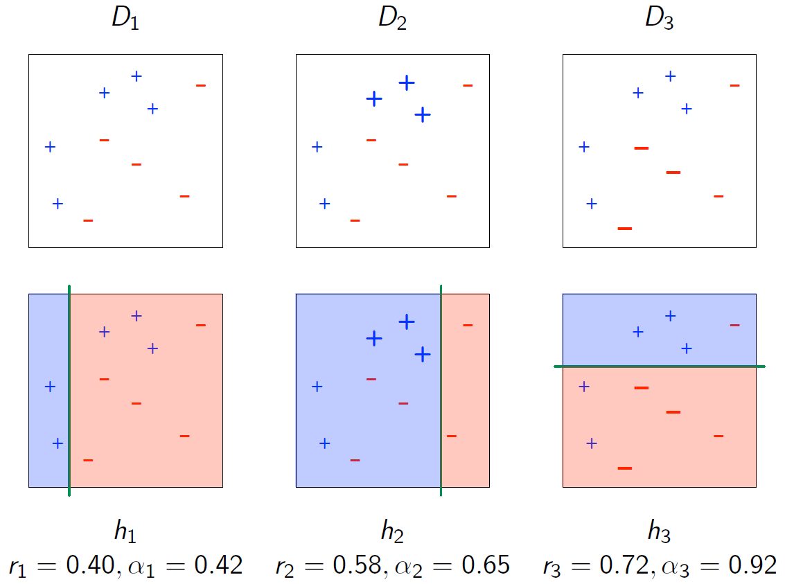
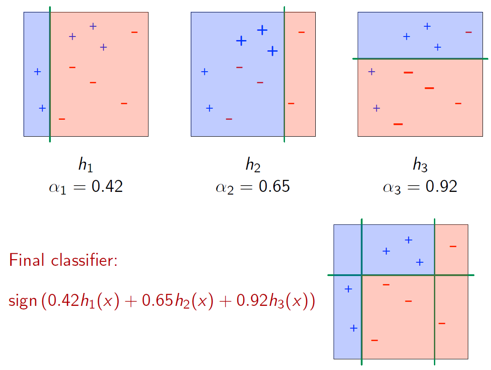

Topic 2 Decission Trees
2.1 Boosting
2.1.1 Weak Learners
It is often easy to come up with a weak classifier, one that is marginally better than random guessing:
\[Pr(h(X)) \neq(Y) \leq \frac{1}{2} - \epsilon\] A learning algorithm that can consistently generate such classifiers is called a weak learner.
Is it possible to systematically boost the quality of a weak learner?
2.1.2 The blueprint for boosting
Given: data set \((x^{(1)}, y^{(1)}), ..., (x^{(n)}, y^{(n)})\)
Initially give all points equal weight.
Repeat for \(t = 1, 2,...\):
Feed weighted data set to the weak learner, get back a weak classifier \(h_{t}\)
Reweight data to put more emphasis on points \(h_{t}\) gets wrong
Combine all these \(h_{t}\)’s.
2.1.3 AdaBoost
Data set \((x^{(1)}, y^{(1)}), ..., (x^{(n)}, y^{(n)})\) labels \(y^{(i)}\in \{-1, +1\}\)
Initialize \(D_{1}(i) = \frac{1}{n}\) for all \(i = 1, 2,...n\)
- Equal weight
For \(t = 1, 2,..., T\):
Give \(D_{t}\) to weak learner, get back some \(h_t: \mathcal{X} \to [-1, +1]\)
Compute \(h_{t}\)’s margin of correctness:
\[score, r_{t} = \sum_{i = 1}^{n}D_{t}y^{(i)}h_{t}(x^{(i)}) \in [-1, +1] \\ \alpha_{t} = \frac{1}{2}ln \frac{1 + r_{t}}{1 - r_{t}}\]
Note that in the above equation \(h_{t}(x^{(i)})\) is the prediction. When prediction is correct the term \(y^{(i)}h_{t}(x^{(i)})\) becomes \(`+ 1\); when incorrect it becomes \(- 1\).
Update weights: \[D_{t+1}(i)\propto D_{t}(i)e^{-\alpha_{t}y^{(i)}h_{t}(x^{(i)})}\]
when correct: weights on data get reduced
when incorrect: increased weights on data points
- Final classifier: \[H(x) = sign(\sum_{t = 1}^{T}\alpha_{t}h_{t}(x))\]
 